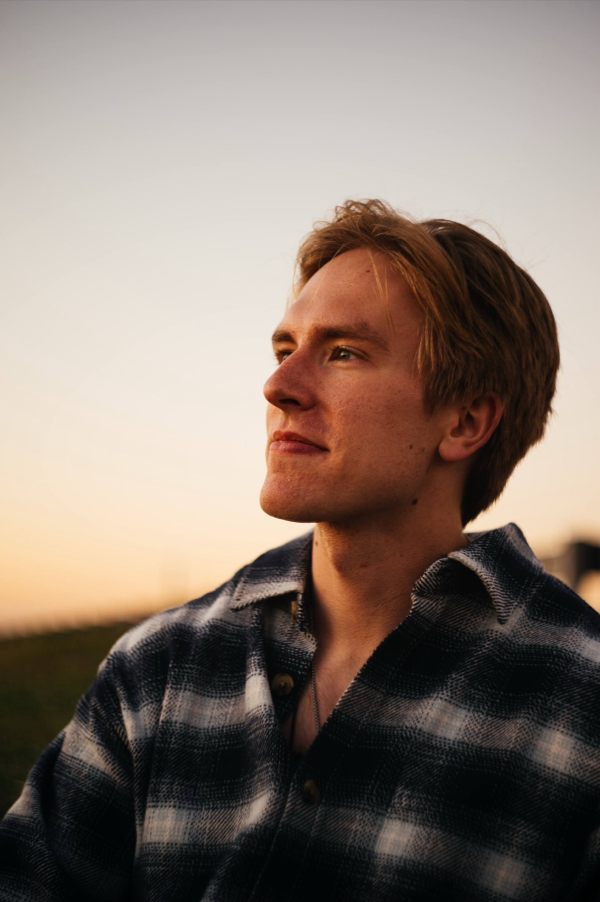
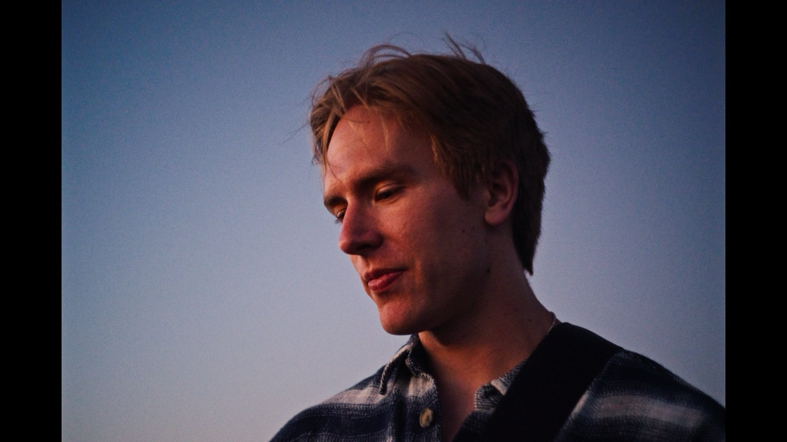

so here's me
I'm an engineer.
While I love a good problem to solve in any context, I chose software as my specialty, as I've been hooked on technology since I combed through the family desktop's filesystem at the ripe age of three. I can proudly say I've been studying AI, both on my own and in academia, since before it was a “cool” subject, and I've designed and architected solutions that utilize, integrate, or build artificially intelligent systems in enterprise, start-up, and entrepreneurial contexts.